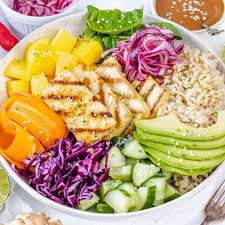

Buddha Bowl

Description
This Buddha bowl is a beautiful combination of vibrant and colorful vegetables, nourishing whole grains, and plenty of plant-based protein accompanied by a delicious peanut dressing.
It is an excellent way to pack tasty and nourishing ingredients into one flavorful and gorgeous dish.
Ingredients:
- 1¼ cup whole-grain rice
- Quick Pickled Red Onion
- 1 red onion
- 1 lemon the juice
- ½ teaspoon salt + ¼ teaspoon red pepper flakes optional
- Grilled Tofu
- 16 ounces tofu firm or extra firm
- 1 tablespoon olive oil
- 1 teaspoon salt + ¼ teaspoon black pepper optional
- Peanut Sauce
- 3 tablespoons peanut butter
- 3 tablespoons tahini or more peanut butter
- 4 tablespoons soy sauce
- 2 tablespoons rice vinegar or lime juice, or apple cider vinegar
- 2 tablespoons sugar
- 1 teaspoon ginger grated
- 1 clove garlic grated
- 2 teaspoons sriracha or ¼ teaspoon red pepper flakes
- 2 tablespoons sesame oil optional
- Veggies
- 1 cup cucumber diced
- 1 cup red cabbage thinly sliced
- 1 large carrot sliced with a vegetable peeler
- 1 large mango diced
- 2 cups spinach
- 1 avocado
Steps:
- Rinse and cook the rice in a pot with lightly salted boiling water.
Drain it then spread it on a baking sheet to cool down.
- Thinly slice the red onion and add it to a bowl with freshly squeezed lemon juice, salt, and red pepper flakes. Mix well and set aside for 10 minutes.
- Pat the tofu dry with kitchen paper and slice it into ¼ inch (0.7 cm) slices. Toss tofu slices in olive oil, salt, and black pepper until well coated in oil. Warm up your grill pan (a non-stick pan works too), add the tofu slices, and grill for 3 minutes on medium heat. Turn around with the help of a flat spatula and grill for 3 more minutes.
- Whisk or blend the sauce ingredients.
- Cut mango and cucumber into dice. Thinly slice the carrot with a vegetable peeler. Thinly chop the red cabbage.
- To a large serving bowl, add boiled rice, spinach, diced mango, carrot ribbons, sliced cabbage, diced cucumber, sliced avocado, and grilled tofu.
- Top with pickled red onion and a generous drizzle of peanut sauce.